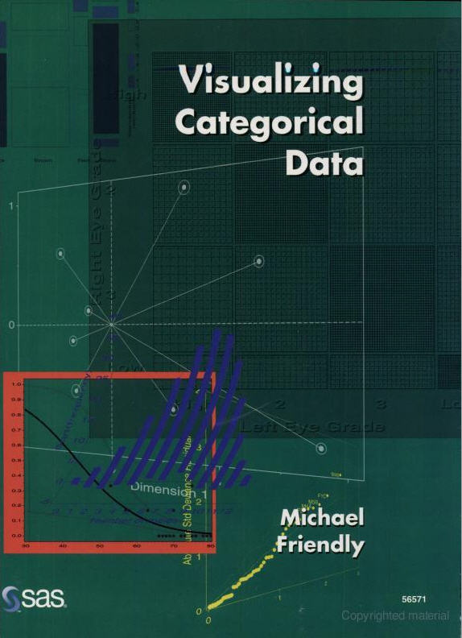
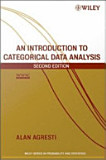
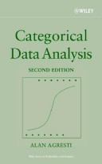
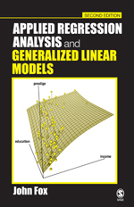
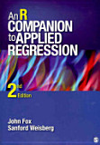

|  |  |  |  |  |
The main texts for this course are
| Week | Topic | Readings | R files |
|---|---|---|---|
| 1 | Overview [slides] [4up] | DDAR: Ch1, Ch2; Agresti: Ch1 |
R-into.R [ |
| 2 | Discrete distributions [slides] [4up] | DDAR: Ch3 |
R-data.R
[ binomial.R [ |
| 3 | Two-Way Tables: Independence and Association [slides] [4up] | DDAR: Ch4; Agresti: Ch2 |
berk-4fold.R
[ vision-sieve.R [ |
| 4 | Two-Way Tables: Ordinal Data and Dependent Samples | DDAR: Ch4; Agresti: Ch2 |
msdiag-agree.R
[ |
| 5 | Loglinear Models and Mosaic Displays [slides] [4up] [Tutorial] on loglin models |
DDAR: Ch5; Agresti: 2.7, Ch. 7 |
berkeley-glm.R
[ titanic-loglin.R [ |
| 6 | Correspondence Analysis [slides] [4up] | DDAR: Ch6 |
mental-ca.R
[ |
| 7 | Logistic Regression I [slides] [4up] | DDAR: 7.1-7.3; Agresti: 3.1-3.2; Ch 4 |
arthritis-logistic.R
[ cowles-logistic.R [ Arrests-logistic.R [ |
| 8 | Logistic Regression II [slides] [4up] | DDAR: 7.3-7.4; Agresti: Ch 4-5 |
cowles-effect.R
[ Arrests-effect.R [ berkeley-diag.R [ |
| 9 | Multinomial Logistic Regression [slides] [4up] | DDAR: 7.5-7.6; Agresti: Ch 6 |
arthritis-propodds.R
[ wlf-nested.R [ wlf-glogit.R [ |
| 10 | Log-Linear Models I [slides] [4up] | DDAR: 8.1-8.4; Agresti: Ch 7 | |
| 11 | Log-Linear Models II [slides] [4up] | DDAR: 8.5-8.11; Agresti: Ch 8 | |
| 12 | Generalized Linear Models: Poisson Regression | DDAR: 9.1-9.4; Agresti 3.3-3.5 |
Please submit your assignments to me by email, as a PDF, Word, or HTML attachment (together with the associated R file), with a Subject: line "PSYC 6136: Assignment XX". To help me keep them straight, it would be most convenient to name them something like "YourName-AssignXX.{pdf,docx,html}".
There are three components to your evaluation in the course: two take-home projects (each worth 40%) that will involve analysis of one or more data sets together with a research report describing the background, your analyses, results and conclusions. For these, you can use any software you like, although R is strongly encouraged.
Project 1 : a selection of data sets for the material up to and including logistic regression. Due date: Oct. 29
Project 2: a selection of data sets for the material from logistic regression to the end of the course. Due date: Dec. 15
© 2014-- Michael Friendly
Canonical URL for this course is: http://www.yorku.ca/friendly/psy6136